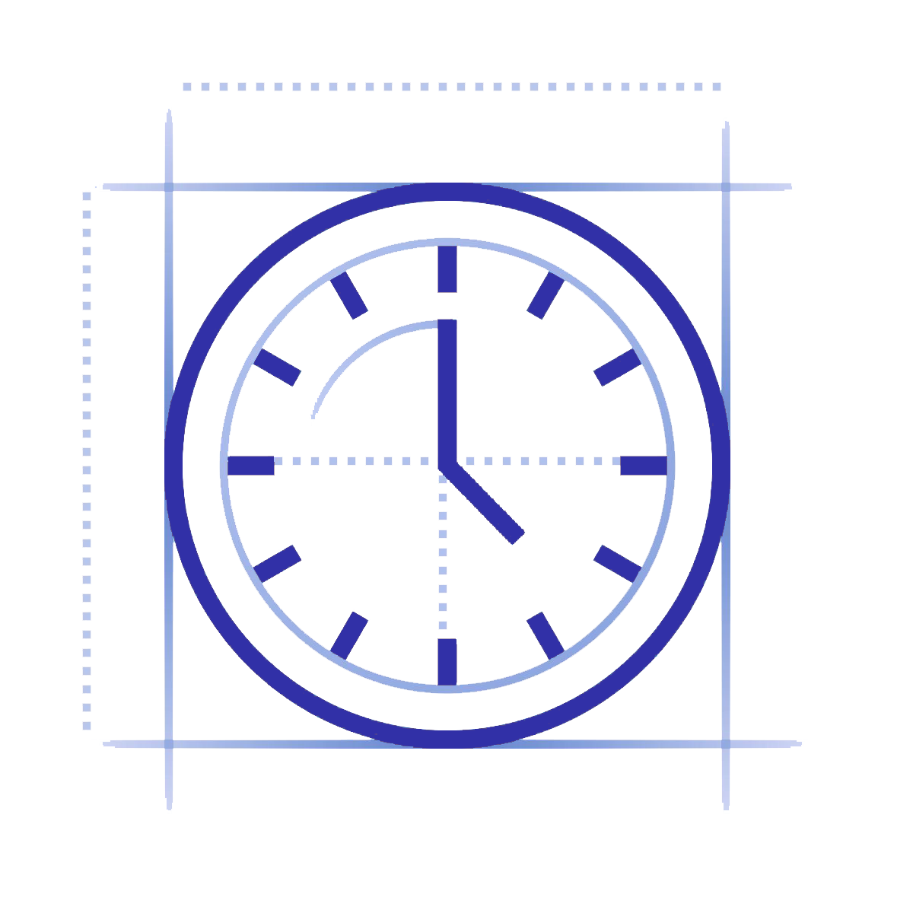
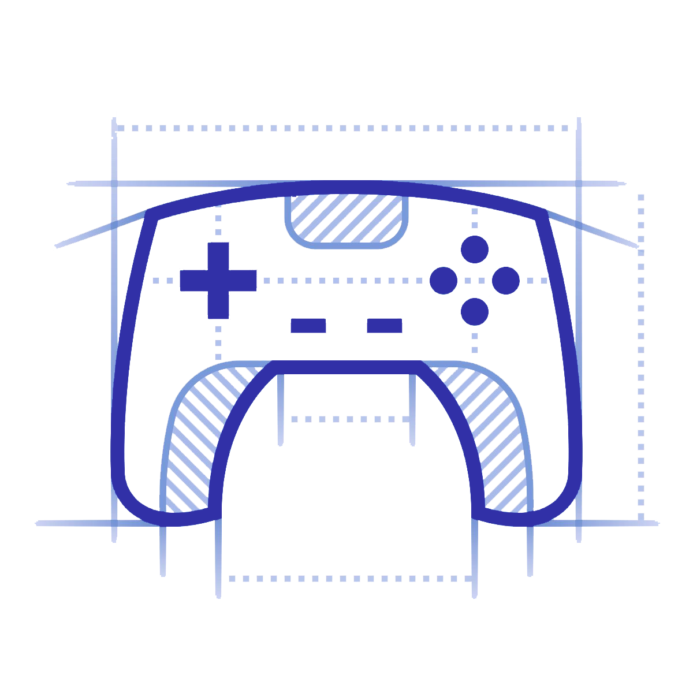
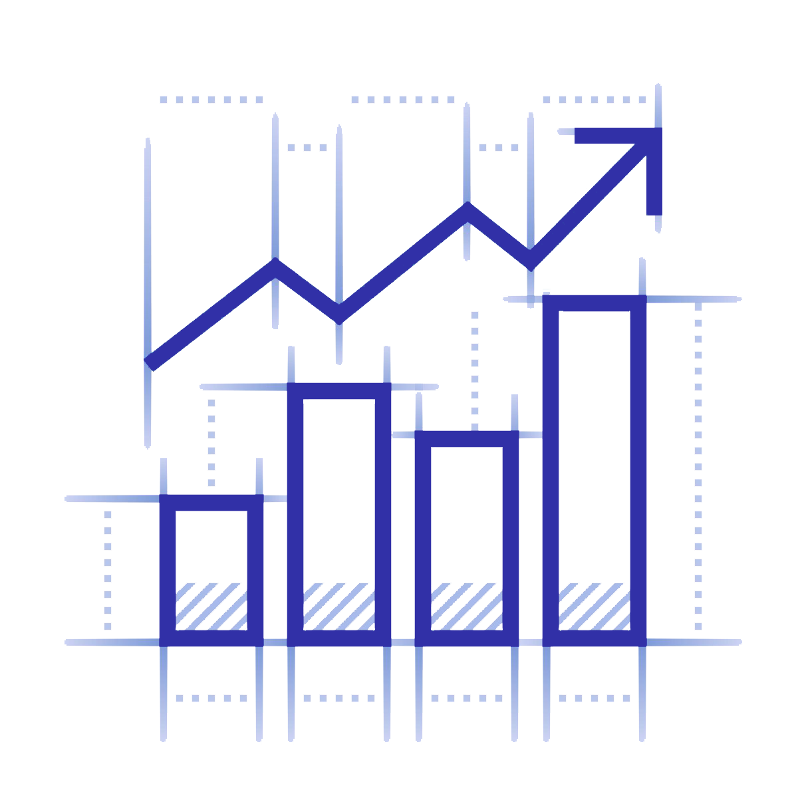
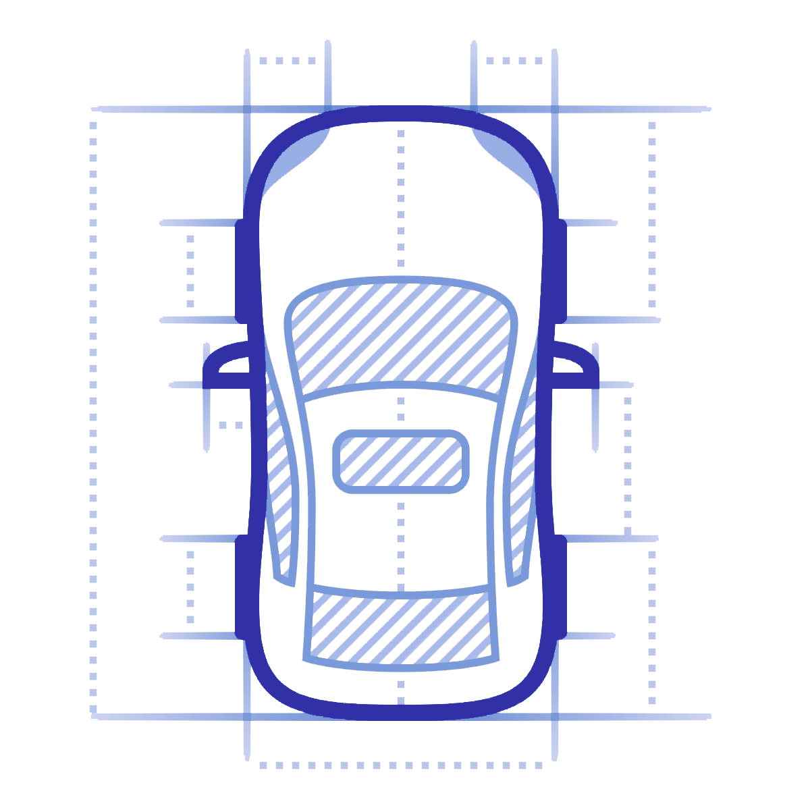
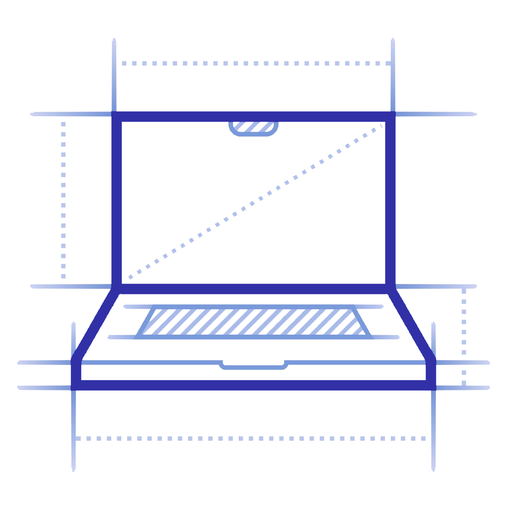
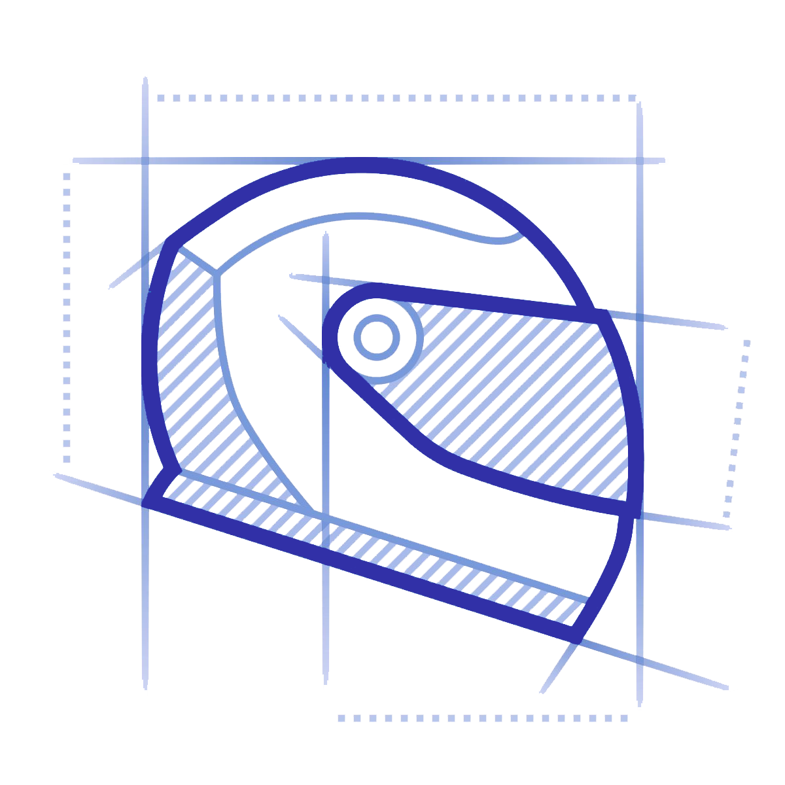

Aprendé técnicas de conducción para reducir segundos por vuelta

Recibí recomendaciones enfocadas en tus necesidades

Identificá tus errores mediante herramientas profesionales

Aprendé a ajustar tu vehículo y obtener el mejor rendimiento

Accedé a las sesiones en vivo sin importar en dónde estés

Nuestros mentores cuentan con experiencia en ligas de alto nivel